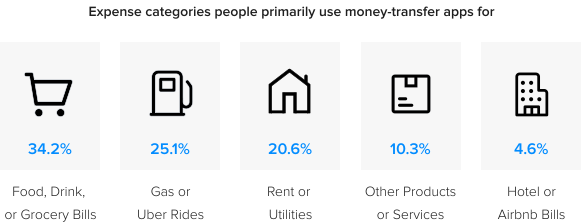
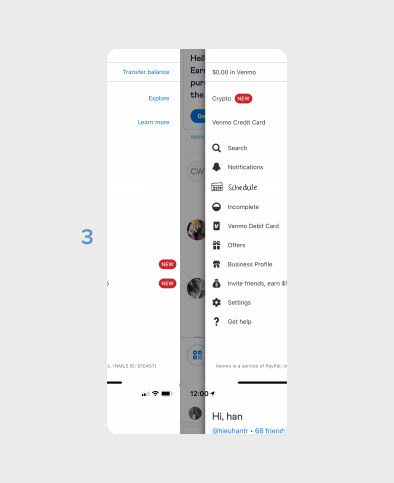

Adding a new recurring payment set up for current users
SUMMARY
Problem: With frequent Venmo users, duplicating the exact process every time results in frustration, financial penalties, effects on relationships, and still doesn't ensure 100% timely payments.
Solution: A new feature set up that allows users to repeat payments just by setting up once—solving all users' pain points and increasing Venmo's competitve advantage.
My role: Business research, ideating, UI/UX design, and prototyping. Project type: Individual project Tools used: Figma, LucidChart, Excel
A user flow of the repeat payment feature
Venmo (owned by PayPal) is a mobile payment service where users can transfer funds to each other within the U.S. Most Venmo customers are under 34 years old. Specifically, 3.3 million are in the 18-24 age group, while 4.1 million are 25-34.
When we analyzed why people use Venmo, we could see a pattern in paying for Food, Transportation, and Rent/Utilities.

In another question, transactions’ descriptions are analyzed, grouped, and sorted based on frequency. From these two data sets, we can see that “Food/Groceries” and “Rent/Utilities” (highlighted) are among the top three most popular payments on Venmo. Millions of people are sharing rent, utilities, groceries bills repeatedly on Venmo every day.
CURRENT PROBLEM
With how Venmo is set up, current users must go through this same task flow and then duplicate it multiple times, depending on the recurrency.
Current user flow of setting up payments
To repeat a similar payment, people still have to start from scratch again. Although lengthy, this process still doesn't ensure that users remember to pay on time, every time. Late payments result in frustration, cause financial penalties, and affect the relationship with their payees.
To tackle this problem, a new recurring payment feature is required. Based on a survey of 25 current Venmo users, the unmet users' goals are:
• Timely transfer
• Convenience of setting up once
• Setting accurate occurences
BUSINESS LANDSCAPE
Venmo’s direct competitors, Zelle and Cash App, both do not have recurring payment feature. In addition to meeting users' needs, this new feature will also create a competitive advantage and increase Venmo’s annual payment volume for upcoming years.
Competitive audit of direct competitors
SKETCHES
I first sketched out potential solutions by asking: How can we integrate this feature seamlessly with Venmo's current system?
I came up with three ideas but ultimately went with the first sketch (1), given how people are familiar with this screen. The second and third ideas (2 and 3) are still reserved and modified for other purposes of this feature, but not to set up payment.
Feature sketch from current paying screen
Feature sketch from past transactions screen

Feature sketch from side menu
DATA ARCHITECTURE
This acts like the skeleton of this feature. With different repeat intervals, appropriate selections will be shown. These options give users a lot of freedom but still retain system's control.
Data architecture for occurence interval selection. For simplicity purposes, primary keys and back-end attributes are not shown.
SOLUTION
Some common theme for this feature includes:
• Secondary fields are only shown when required—avoids confusing users with non-applicable fields
• Alternative text ("Repeat monthly, ending on July 31, 2021") updates as users change their preference, increasing accessibility for all
Daily interval: Enter with keypad
Weekday picker: Tap selection
Interval selection: Calendar view
Selecting a monthly repeat
Post-set up walkthrough for first time journey completion
Viewing set up occurences
How a past recurring payment looks
INTERACTIVE PROTOTYPE
REFLECTION
Venmo doesn't public its design system, so I learned a lot doing reverse-engineer for the components, mockups, and prototypes shown above. With how people are using Venmo, I think sooner or later, this will be developed as a real feature. If I had more time, I would definitely dive deeper in the post-set up journey, where users can edit and pause their payments.
*The case study is curated from my personal opinion, so it is not reflective or affiliated with any mentioned companies.